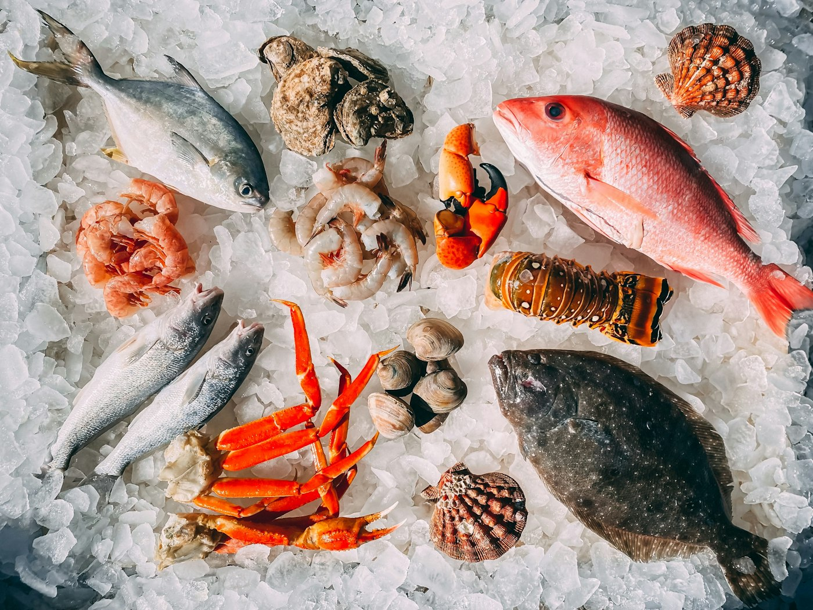

Fried platters
- Fried shrimp
- Fried flounder
- Fried scallops
- Fried trout
- Fried oysters
- Deviled crab
- Clam strips
Wilmington seafood shack
Down-home platters, old-school digs, and generous servings of shrimp, clams, and more on College Road.
Something Fishy Seafood is a casual seafood restaurant at 3436 College Road in Wilmington. Public listings describe it as a down-home seafood shack serving generous portions of clams, shrimp, and more.
It is a sit-down spot for lunch or dinner, with takeout also listed. Families are part of the regular mix: listings mention a kids’ menu and a room that works for a straightforward meal rather than a fancy night out.

Hours as listed on Google, Yelp, and Restaurantji as of November 2026. Some other directories show Tuesday hours. Please call to confirm before you visit.
Address
3436 College RdWilmington, NC 28412
Google rating, based on 2,647 reviews, as of November 2026. Individual review quotes are not shown on this sample page.